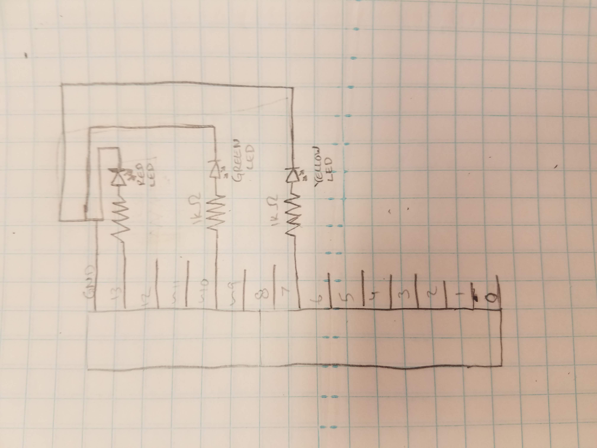
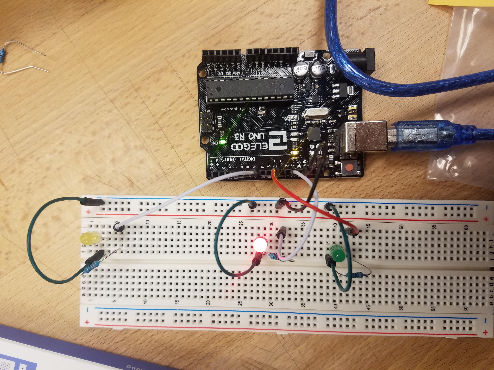

Sam's Assignment 1!
Schematic

This schematic shows the manner in which the resistors and LEDs were connected to the arduino and one another. The resistors were connected between the power supply and the LEDs. I chose 1K Ohm resistors because the arduino was putting out about 5V and each LED created a 1.8V drop for a total of 3.2V, with a desired current of 20mA 3.2V/0.02A=160 Ohms. At the time I thought the lowest Ohm resistor I had was 1000 Ohms so that is what I used. This made my LEDs much dimmer than they would have been if I has found my 220 Ohm resistors at the time because those would have allowed significantly more current.
Circuit

This image shows how I used wires to connect from pins on the arduino which supplied power and ground to a breadboard on which I mounted the components (LEDs, resistors). This was the first time I had used a breadboard so I had to learn in which ways the rows and columns of holes are connected.
Code Snippet
The following code turns the LEDS on one at a time and then reverses and turns them off one at a time.
// the setup function runs once when you press reset or power the board
void setup() {
// initialize digital pin LED_BUILTIN as an output, this is the red LED
pinMode(LED_BUILTIN, OUTPUT);
//inititalize digital pin 7 as an output, this is the yellow LED
pinMode(7, OUTPUT);
//initialize digital pin 10 as an output, this is the green LED
pinMode(10, OUTPUT);
}
// the loop function runs over and over again forever
void loop() {
// turn the red LED on
digitalWrite(LED_BUILTIN, HIGH);
// wait for a 50ms
delay(500);
// turn the yellow LED on
digitalWrite(7, HIGH);
// wait for 50ms
delay(500);
// turn the green LED on
digitalWrite(10, HIGH);
// wait for a second
delay(1000);
// turn the red LED off
digitalWrite(10, LOW);
// wait for a 50ms
delay(500);
// turn the yellow LED off
digitalWrite(7, LOW);
// wait for 50ms
delay(500);
// turn the green LED off
digitalWrite(LED_BUILTIN, LOW);
// wait for 50ms
delay(500);
}
Circuit Operation